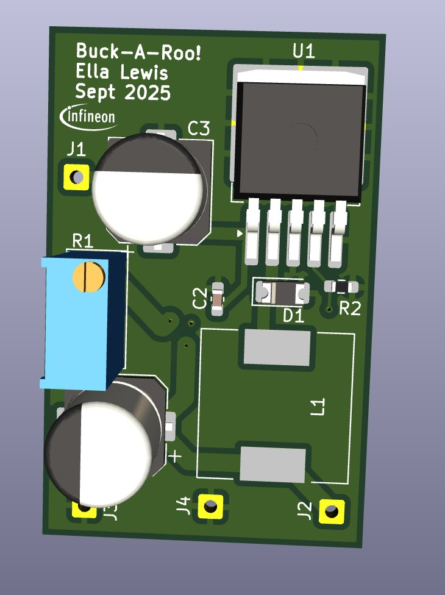
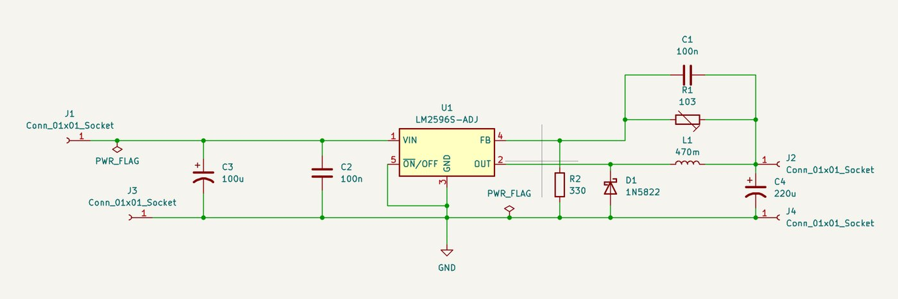

Adjustable Buck Converter Daughter Card
A small step-down card that takes anything from 8 to 40 V in and produces a trim-set output. Built as a reusable building block for other test setups rather than as an end product in itself.
What it is
An LM2596S-ADJ analog buck regulator on a two-layer external daughter card. Input range is 8–40 V; output voltage is set by a trim resistor in the feedback divider, so one board covers a wide range of downstream requirements without a respin.
Why analog control
For a utility rail there is no reason to spend a microcontroller and a firmware maintenance burden on something a fixed-function regulator does well. The LM2596S-ADJ is old, extremely well characterized, and its application circuit is documented to death — which is exactly what you want in a board whose job is to be boring and reliable underneath more interesting hardware.
Board & schematic


Reuse
The buck/boost stage in the 5000 mAh battery pack builds directly on what came out of this card. Small, self-contained boards like this are worth building precisely because they turn into subsystems of the bigger ones later.